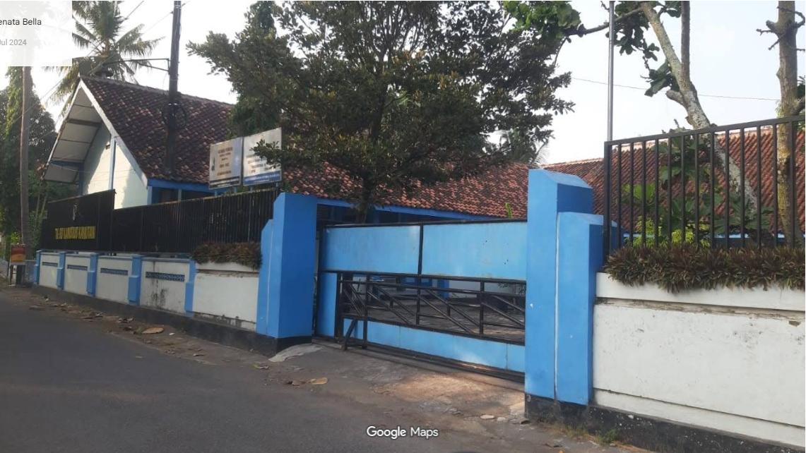
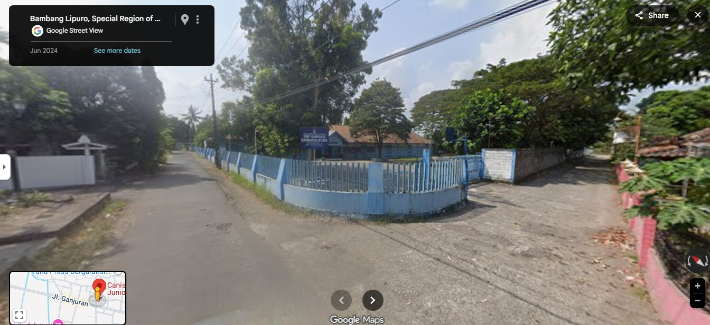
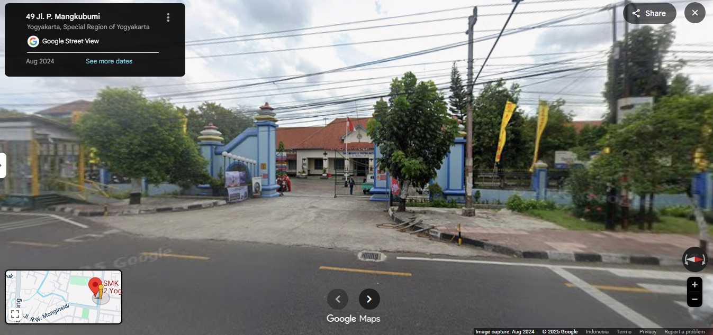

| Home Profile Album Article Guest book |
|
ABOUT ME
This Is Me Jenjang Pendidikan Perminatan |
Jenjang Pendidikan
 Saya memulai pendidikan dasar di SD Kanisius Kanutan yang berlokasi di Kanutan, Sumbermulyo, Bambanglipuro, Bantul. Saat pertama kali masuk,saya merasa sangat bersemangat karena melanjutkan pendidikan di tempat yang sama dengan lokasi teman - teman TK saya sekaligus gugup karena harus beradaptasi dengan lingkungan. Para guru di sekolah sangat sabar dan selalu membimbing kami agar rajin belajar dan menghormati sesama. 
Setelah menyelesaikan pendidikan dasar, saya melanjutkan ke jenjang pendidikan menengah pertama di SMP Kanisius Bambanglipuro, Saya hanya 
Saya melanjutkan Pendidikan menengah atas di SMK Negri 2 Yogyakarta, di SMK saya mengambil jurusan SIJA atau Sistem informasi Jaringan |